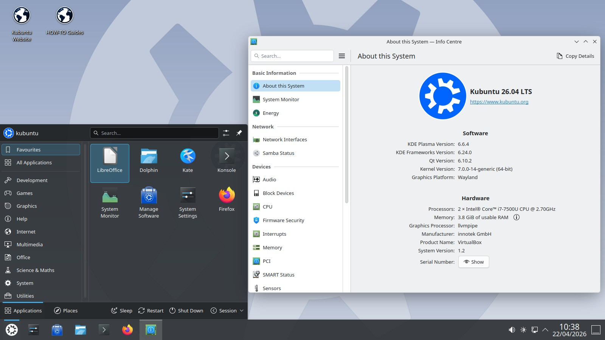
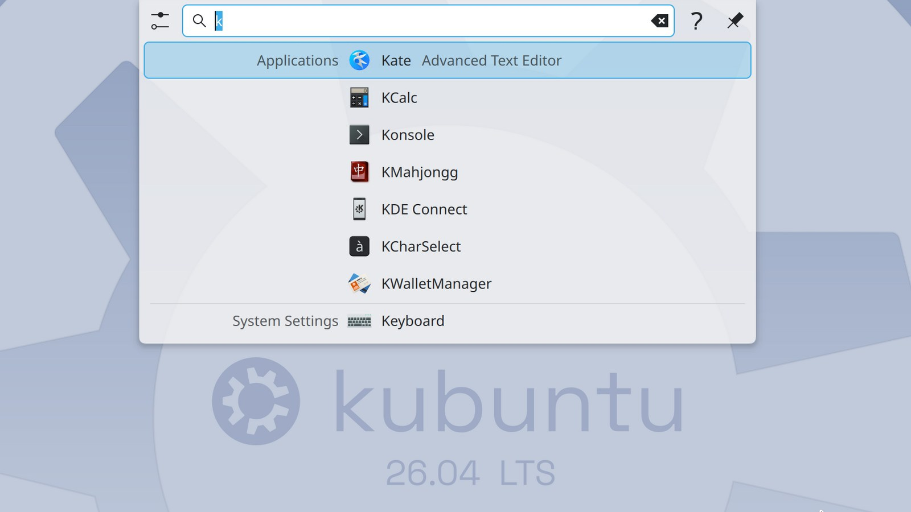
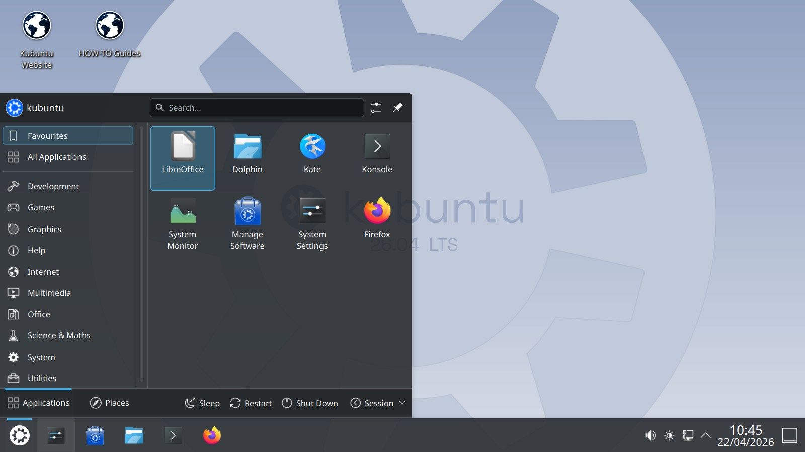
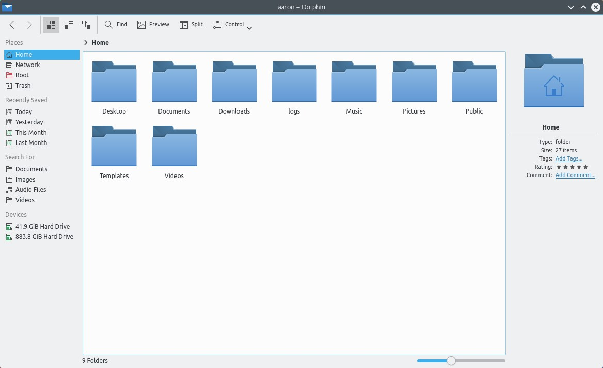

🎨
Alta personalización
Permite adaptar paneles, widgets, temas y efectos según preferencias individuales.
Kubuntu es una distribución GNU/Linux oficial de Ubuntu que utiliza el entorno de escritorio KDE Plasma. Combina la estabilidad de Ubuntu con la belleza, flexibilidad y gran capacidad de personalización de Plasma.

Kubuntu es una distribución GNU/Linux flavor (variante oficial) de Ubuntu, desarrollada y mantenida por la comunidad de Kubuntu junto con el equipo de Canonical/Ubuntu.
Es una distribución GNU/Linux, lo que significa que utiliza el núcleo Linux junto con herramientas del proyecto GNU y software libre.
Su relación con Ubuntu es directa: Kubuntu toma la base sólida, el repositorio, los ciclos de lanzamiento y el soporte de Ubuntu, pero reemplaza el entorno de escritorio por KDE Plasma.
KDE Plasma es el entorno de escritorio principal de Kubuntu. Ofrece una interfaz moderna, altamente personalizable y centrada en la productividad.
¿Para quién es apropiado? Está indicado para usuarios que buscan facilidad de uso, elegancia, gran capacidad de personalización y un flujo de trabajo productivo, tanto para uso doméstico, educativo o profesional.
| Nombre | Kubuntu |
|---|---|
| Fecha de lanzamiento inicial | Octubre de 2004 |
| Desarrollador/comunidad responsable | Comunidad de Kubuntu (Kubuntu Team), con apoyo de Ubuntu/Canonical |
| Base | Ubuntu (repositorios y sistema base) |
| Entorno de escritorio principal | KDE Plasma |
| Licencia | Principalmente software libre (GPL/LGPL y otras licencias libres). Incluye componentes libres siguiendo Ubuntu. |
| Arquitecturas compatibles | AMD64 (x86_64) para la ISO de escritorio de la versión actual. |
| Sitio web oficial | https://kubuntu.org/ |
Kubuntu nace como la variante oficial de Ubuntu con KDE como entorno de escritorio, buscando ofrecer una alternativa elegante y personalizable desde los inicios de Ubuntu.
Surgió para dar a los usuarios una opción oficial que combinara la base de Ubuntu con KDE Plasma, atendiendo a quienes preferían el flujo de trabajo y la filosofía de KDE.
Kubuntu comparte lanzamientos, repositorios y ciclo con Ubuntu, diferenciándose principalmente en el escritorio (KDE Plasma) y selección de aplicaciones KDE.
A lo largo del tiempo Kubuntu ha ido integrando las sucesivas versiones de KDE Plasma, pasando por KDE 3, KDE 4 y, actualmente, KDE Plasma 6, manteniendo su enfoque de usabilidad y personalización.
KDE Plasma es un entorno de escritorio moderno, ligero, modular y altamente personalizable, desarrollado por la comunidad KDE.
Diferencias generales frente a otros escritorios Linux: Plasma prioriza la personalización sin sacrificar usabilidad, ofrece gran integración con aplicaciones KDE y permite ajustar el escritorio a distintos estilos de trabajo.
Kubuntu utiliza KDE Plasma como su entorno de escritorio principal.
Permite adaptar paneles, widgets, temas y efectos según preferencias individuales.
Diseño limpio y profesional, con experiencia fluida en distintos dispositivos.
Excelente armonía entre Plasma y el ecosistema de aplicaciones KDE.
Basado en principios de libertad, transparencia y colaboración comunitaria.
Hereda repositorios, paquetes .deb, actualizaciones y estabilidad de Ubuntu.
Discover permite buscar, instalar y actualizar aplicaciones de forma intuitiva.
Sencillo por defecto y potente cuando se necesita personalizar.
Nota: la selección puede variar según la versión de Kubuntu. Se distingue entre aplicaciones incluidas por defecto y disponibles para instalar en los repositorios.
Tipo: Incluida por defecto (típico).
Función: Administrador de archivos moderno, rápido y potente.
Tipo: Incluida por defecto.
Función: Emulador de terminal flexible y personalizable.
Tipo: Incluida por defecto.
Función: Centro de software para instalar, actualizar y gestionar aplicaciones.
Tipo: Disponible para instalar (común en imágenes; puede no estar forzosa en todas las ediciones).
Función: Integración con dispositivos Android/iOS para compartir archivos, notificaciones y más.
Tipo: Disponible en repositorios; su inclusión por defecto puede variar entre versiones.
Función: Suite ofimática completa y libre.
Tipo: Navegador web presente en muchas versiones de Kubuntu (ver release notes de la versión específica).
Función: Navegación web segura y moderna.
Kubuntu sigue el sistema de versiones de Ubuntu con formato AA.MM (año.mes), acompañado de un nombre en clave.
Consulte siempre las notas de lanzamiento oficiales para datos actualizados de cada versión.



Si alguna imagen no está disponible localmente, puede sustituirse por capturas oficiales de kubuntu.org respetando derechos de autor.
Análisis y reseñas de Kububuntu en español publicados en YouTube.
Kubuntu 26.04 LTS "Resolute Raccoon": review completa — Máquinas Linuxeras
Kubuntu 26.04: todas las novedades — De Windows a Linux
Kubuntu: análisis del sistema operativo, software, interfaz y configuración — Jusdeit
Kubuntu es gratuito, fácil de probar desde un USB sin instalarlo y está listo para usar en tu equipo.
Enlaces a páginas oficiales de Kubuntu.